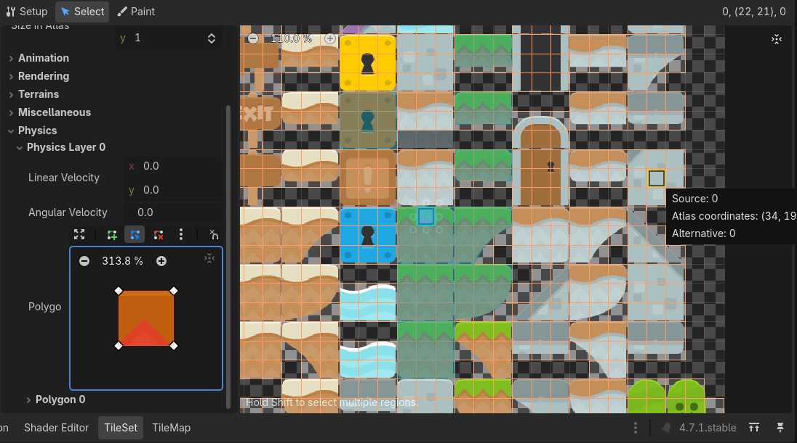
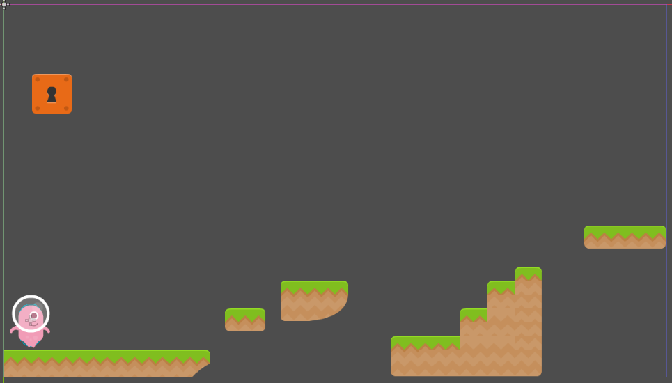
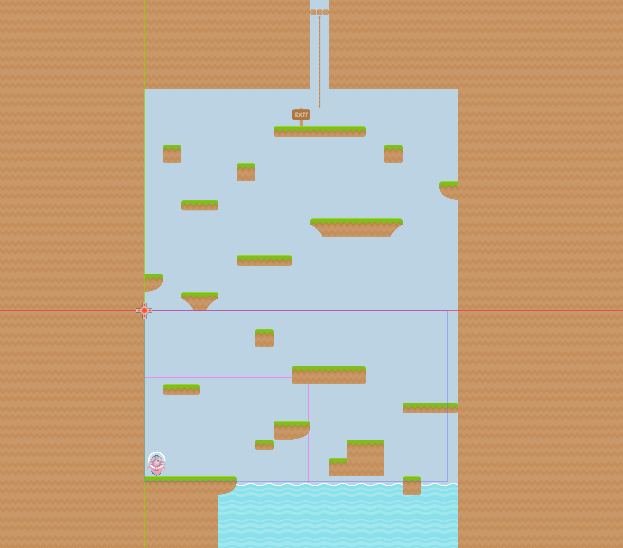

Section 4 of 7
Next Section →

Section 4: Game Scene Architecture & Level Design
Create a Game.tscn scene to manage your game, and build your first playable level with TileMapLayer.
Section Progress: 0%
1
Understanding the Game Manager Pattern
In larger games, it's useful to have a Game Manager scene that handles loading levels, tracking score, and managing overall game state. This keeps your code organized and reusable.
- Press Ctrl + N to create a new scene
- Add a Node2D as the root node
- Rename it to "Game"
- Save the scene as "Game.tscn"
💡 Pro Tip: The Game Manager pattern separates the game logic from the level content. This makes it easier to add new levels and manage game state.
2
Scripting the Game Manager
Add a script to the Game node that will handle loading levels and managing game state.
extends Node2D
var current_level_node
var current_level = 1
func _ready():
load_level(current_level)
func load_level(level_number):
# Clear any existing level
if current_level_node:
current_level_node.queue_free()
# Load the level scene
var level_path = "res://Scenes/Levels/Level" + str(level_number) + ".tscn"
if ResourceLoader.exists(level_path):
var level_scene = load(level_path)
current_level_node = level_scene.instantiate()
add_child(current_level_node)
else:
print("Level not found: " + level_path)
func get_current_level_node():
return current_level_nodeUnderstanding the Script
- current_level_node - Stores a reference to the currently loaded level
- load_level() - Removes the old level and loads a new one
- queue_free() - Safely removes the old level from memory
- instantiate() - Creates an instance of the level scene
💡 New Concept:
queue_free() is a safe way to delete nodes. It waits until the end of the frame to remove the node, preventing errors.
3
Creating the Level Scene
- Press Ctrl + N to create a new scene
- Add a Node2D as the root node
- Rename it to "Level"
- Save the scene as "Level1.tscn"
Setting Up the Level Structure
- With the Level node selected, add a child TileMapLayer
- Rename it to "Ground"
- Add another child TileMapLayer
- Rename it to "Platforms"
4
Configuring the TileSet
- Select the "Ground" TileMapLayer node
- In the Inspector, click the "TileSet" dropdown
- Select "New TileSet"
- Click "TileSet" to open the TileSet panel
- Click "Add Atlas" and load your platformer tilesheet
- Set "Tile Size" to match your tiles (often 16x16, 32x32, or 64x64)
- Click "OK" to create the atlas
- Save the TileSet
Adding Collision to Tiles
- In the TileSet panel, select a tile you want to have collision
- In the right panel, click the "Physics" tab
- Click "Add Physics Layer"
- Click "Add Collision Polygon"
- Adjust the polygon to cover the tile's solid area
- Repeat for other tiles that need collision (ground, walls)
💡 Pro Tip: For platformers, you typically want collision on ground tiles and walls, but not on decorative tiles. This keeps gameplay smooth and predictable.

Figure 4.4: Configuring TileSet with collision polygons
5
Using TileMapLayer Tools
Select the appropriate TileMapLayer node and use the tools to paint your level.
- Select the "Ground" TileMapLayer
- Use the Paint tool (D) to draw the ground
- Use the Fill tool (F) for large areas
- Select the "Platforms" TileMapLayer
- Paint floating platforms where needed
Level Design Tips
- Start with a flat ground section for the player to land on
- Add platforms at different heights to teach jumping
- Include gaps that require precise jumps
- Place the player spawn point at the start
- Place the exit at the end
💡 Pro Tip: Test your level frequently! It's easier to adjust placement while you're still painting than after everything is done.

Figure 4.5: Painting the first level with platforms and ground
6
Testing Your Setup
- Open Game.tscn
- Press F5 to run the game
- Your level should load and the player should appear
- Test movement and jumping on your newly painted platforms
- If something isn't working, check:
- Is the player scene correct?
- Does the TileSet have collision?
- Is the level path correct in Game.gd?
What You've Accomplished
- ✅ Created a Game.tscn manager scene
- ✅ Built Level1.tscn with TileMapLayer
- ✅ Configured TileSet with collision
- ✅ Painted a playable level
- ✅ Tested the full setup
💡 Next Steps: In the next section, you'll add animated enemies to make your level more challenging!

Figure 4.6: Testing the complete setup with player in the level